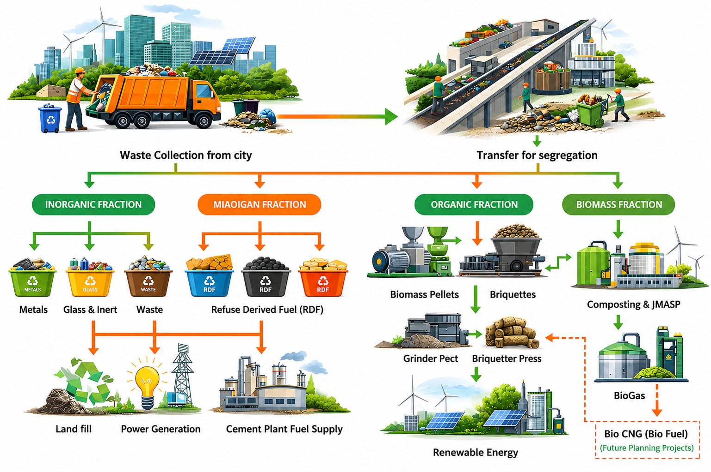

Building a Cleaner, Self-Reliant India
OJAS BIOFUEL. LLP is a clean-energy enterprise dedicated to building a complete biofuel ecosystem. By converting agricultural and organic waste into high-value energy products, we are driving the transition toward a low-carbon energy future.
Bridging the Energy and Waste Challenge
We integrate the entire value chain—from biomass aggregation at the farm gate, through manufacturing of solid and liquid biofuels, to distribution across industrial and transportation customers into a single platform.
✓ Closed-Loop Ecosystem
Seamlessly connecting farmers, biomass aggregators, manufacturing partners, and end-user industries.
✓ Diversified Product Portfolio
Manufacturing Briquettes, Pellets, Biodiesel, and Bio-ethanol to replace fossil fuels at a competitive cost.
Our Vision & Impact
- Sustainable Energy: Powering heavy industry and transport while displacing coal, diesel, and furnace oil with high-efficiency biomass equivalents.
- Circular Economy: Establishing a zero-waste lifecycle by transforming crop residue, sawdust, and used cooking oil into premium biofuels.
- Rural Empowerment: Creating continuous value from agricultural waste, providing farmers with reliable secondary income, and actively reducing open-field stubble burning.
Our Integrated Value Chain
